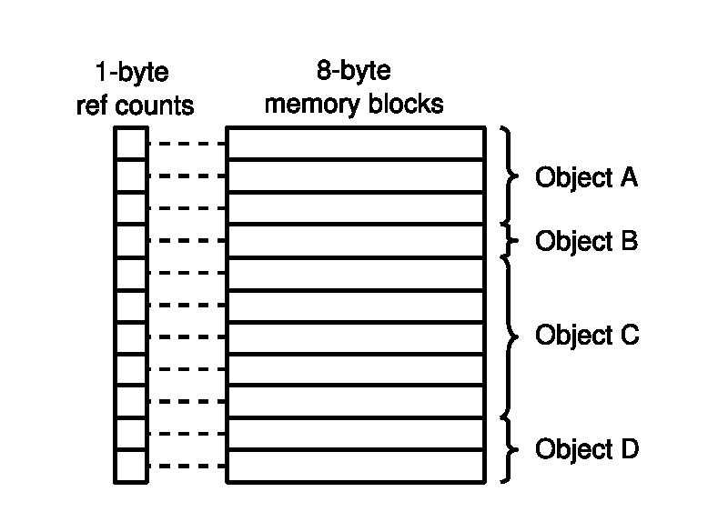

Memory management bugs, in particular incorrect uses of free, are notoriously hard to debug because the symptoms of the problem show up in a place far disconnected from where the bug actually occurred. For instance, an incorrect free can lead to corruption of a completely unrelated object allocated later.
Debugging allocators such as Dmalloc, and tools such as Valgrind and Purify provide some help, by detecting when freed objects are accessed (Valgrind, Purify) or modified (Dmalloc). However, these tools cause large slowdowns, making them unsuitable for anything but debugging, and they still only report problems after the fact (at the bad access) rather than at the bad free itself.
HeapSafe is the part of Ivy that directly checks that a program uses free safely, with time and space overheads low enough (normally below 30% for single-threaded code) that it can be used all the time. Furthermore, when HeapSafe does detect an invalid free, it can simply leak the object (and log the problem), preventing the program from failing.
HeapSafe has two significant limitations. First, it is not fully sound (i.e., it can miss or misreport bad frees), mostly because of limitations of C itself, such as the lack of array bounds checks (see Safety in HeapSafe). Finally, HeapSafe does not detect memory leaks, as it only checks the soundness of existing frees. Unlike the earlier, standalone, release of HeapSafe, the version of HeapSafe integrated with Ivy does support multi-threaded code (though with higher runtime overheads).
Applying HeapSafe to a program generally requires limited source code changes, both to use HeapSafe's extended memory management API (see Deallocation Safety), and to help the runtime library track pointers to heap objects (see Tracking Pointers). The modified source code can still be compiled and run without HeapSafe (the HeapSafe header file defines HeapSafe's operations in terms of the standard C library when HeapSafe isn't used).
Our experience is that applying HeapSafe to existing medium-size programs is generally easy. Applying HeapSafe to larger programs like Perl or the Linux kernel is more complex, but still quite tractable (a few man-weeks of effort). HeapSafe includes a special debugging mode which simplifies porting programs by tracking the source of all pointers to objects (and where they were last written), at the cost of a substantial slowdown (up to 4x slower).
HeapSafe is implemented as a C-to-C compiler using gcc as its backend. The currently supported platforms are Linux and Mac OS X.
HeapSafe maintains a reference count for each object, i.e., a count of the number of pointers to each object. A deallocation of an object O is safe if O's reference count is zero[#]_.
| [1] | Reference counts due to internal references within O are removed prior to this check. |
The HeapSafe compiler transforms C programs to update reference counts on every pointer write. The HeapSafe runtime library includes:
- Replacements for C's memory management functions (malloc, calloc, realloc and free). These replacements:
- clear memory when it is allocated (i.e., malloc behaves like calloc), to avoid corrupting reference counts on the first write of a pointer
- check deallocation safety in free and realloc
- Support for delayed free scopes, which delay deallocation and its associated reference count check. These scopes are key to making HeapSafe's checks practical (see Deallocation Safety).
- Replacements for C's memcpy, memmove and memset functions that update reference counts correctly when copying pointers.
Using HeapSafe and its runtime library instead of gcc is as simple as replacing uses of gcc by ivycc --heapsafe, and #including the heapsafe.h header file which declares HeapSafe's runtime library. HeapSafe's symbols start with hs_, HS_ or RC_ to avoid name conflicts (e.g., HeapSafe's malloc replacement is hs_malloc).
HeapSafe also includes a header file, hslib.h, which redefines a few standard C library functions (in particular, the malloc, calloc, realloc and free memory management functions) in terms of HeapSafe functions to simplify porting.
At startup, programs compiled with HeapSafe check the HEAPSAFE environment variable to set various options (see HEAPSAFE Environment Variable for full details). In particular:
- If HEAPSAFE=log, then HeapSafe will print the number of bad frees (along with a few other statistics) when the program exits.
- If HEAPSAFE=forcefree, then HeapSafe will free objects that fail their deallocation check rather than silently leaking them. This may be a better option early in the conversion process to HeapSafe when many deallocations fail.
Use HEAPSAFE="forcefree log" if you want both behaviours.
With hslib.h included and HEAPSAFE=forcefree, most C programs can immediately be run with HeapSafe. They will however most likely report a number of bad frees, which you will need to address... See A Typical Conversion to HeapSafe for more details.
A final note: HeapSafe's reference counts are stored in a 512MB array that is declared by the runtime library. Because of Linux's lazy page allocation strategy, the system only allocates as pages for those reference count entries that are actually used - this leads to a 12.5% memory overhead for reference counting (see Implementation Overview). However, if your machine does not have 512MB of virtual memory (e.g., you have little RAM and no swap space configured), Linux will just kill your program on startup (and print Killed). This can be fixed by setting /proc/sys/vm/overcommit_memory to 1:
# do this as root echo 1 > /proc/sys/vm/overcommit_memory
Checking that an object's reference count is zero at deallocation time ensures that no pointers remain to the object, hence no subsequent access can corrupt the deallocated memory. In many cases, the pointer passed to free is already the only remaining pointer to the object, so as long as that pointer is zeroed-out, the deallocation is safe. HeapSafe provides a macro, HS_ZFREE, which frees an object and zeroes-out its argument, directly supporting this common case. For instance, the following program will run without HeapSafe reporting any problems:
#include <heapsafe.h>
int *mem;
int main()
{
mem = hs_malloc(100 * sizeof(int));
...
HS_ZFREE(mem);
}
If free was used instead of HS_ZFREE, HeapSafe would report that the deallocation was bad, as the global variable mem would still point to the object.
Note that objects stored in local variables do not need to be zeroed-out as long as the local variable is dead (not subsequently used without being reassigned) after the free. If mem becomes a local variable, the example above can be written as:
#include <heapsafe.h>
int main()
{
int *mem = hs_malloc(100 * sizeof(int));
...
HS_FREE(mem);
}
The HS_FREE macro does not zero-out its argument; it is the most direct replacement for the standard free function when using HeapSafe.
When several pointers point to the object being freed, HS_ZFREE is not sufficient. One solution is to zero-out all the other pointers to the object to be deallocated:
#include <heapsafe.h>
int *mem, *scan;
int main()
{
mem = hs_malloc(100 * sizeof(int));
for(scan = mem; scan < mem + 100; scan++)
*scan = 42;
scan = NULL; /* Without this, the free will fail */
HS_ZFREE(mem);
}
Zeroing-out scan is necessary as it still points to the end of the object in mem.
In some cases, zeroing-out pointers is not very practical. Consider for instance deallocating a circular linked-list (where the last element points to the first):
void free_loop(struct loop *start)
{
struct loop *next, *cur = start;
do
{
next = cur->next;
free(cur);
cur = next;
}
while (cur != start);
}
When the first element is freed, there remains a pointer from the last element (which will not be deallocated until the end of the list is reached). While it would be possible to modify the code to make the list non-circular, this would complicate the code (possibly introducing bugs). And for more complex data structures, the code to zero-out internal data structure pointers could become quite complicated, especially as it must still be possible to free the whole data structure afterwards.
To get around this problem, HeapSafe introduces a small extension to the memory management API, delayed free scopes. Delayed free scopes are based on the observation that while pointers often remain to deallocated objects, these pointers are generally soon overwritten or are themselves found in objects that are soon deallocated (e.g., because they are part of the same data structure, as in the circular list example). With delayed free scopes, frees requested within the scope are only performed and checked when the scope ends. For instance, the circular list example above becomes:
void free_loop(struct loop *start)
{
struct loop *next, *cur = start;
hs_delayed_free_start(); /* Delay frees until the end of the function */
do
{
next = cur->next;
HS_FREE(cur);
cur = next;
}
while (cur != start);
hs_delayed_free_end(); /* Perform delayed frees */
}
If delayed free scopes are nested, deallocations are delayed until the outermost scope ends.
HeapSafe depends on accurate reference counts. Maintaining these requires
- tracking all pointer writes (including, e.g., those done via structure copies or memcpy)
- knowing the types of deallocated objects (to update the reference counts of objects referenced from the now-dead object)
- noticing when a program changes how it uses unions containing pointers (e.g., switches from using an int field in a union to a void *)
To assist in tracking pointers, HeapSafe introduces adjust functions, a form of run-time type information. An adjust function for a type T is a function that will adjust the reference count for all objects referenced by an array of objects of type T. For instance, for the type:
struct doubly_linked_list {
int value;
struct doubly_linked_list *prev, *next;
};
the adjust function adjusts the reference counts of objects referenced by the next and prev fields.
An adjust function has type hs_type_t, defined as:
typedef void (*hs_type_t)(void *x, int by, size_t s);
The function takes a pointer to the array of objects of type T (x), an amount by which to adjust the reference counts (by, must be +1 or -1) and the size (in bytes) of the array of objects (s).
The adjust function for type T is obtained using the hs_typeof( T ) construction. Normally, HeapSafe automatically generates the code for an adjust function, however if type T is (or contains) an union containing pointers, then you have to write an adjust function by hand [1], as HeapSafe has no way of knowing which field of the union is currently in use. For details on writing adjust functions by hand, see Writing Adjust Functions.
| [2] | If a union contains only pointer fields, then HeapSafe can still generate the adjust function. |
Adjust functions are used by HeapSafe's (de)allocation API (hs_typed_realloc, hs_typed_free) and to help HeapSafe track pointer writes.
Pointer writes and copies of structures containing pointers are automatically handled by HeapSafe. To copy a structure of type T, HeapSafe uses T's adjust function, so HeapSafe will ask for a hand-written adjust function when it cannot generate one automatically. For instance, in the following code the programmer must write an adjust function for struct strange:
struct strange {
enum { k_integer, k_pointer } key;
union {
int integer;
void *pointer;
} values;
} a, b;
void f(void)
{
/* This copy requires a hand-written adjust function for strange */
a = b;
}
Calling memcpy, memmove and memset (and other similar functions) to copy objects containing pointers will cause HeapSafe's reference counts to go wrong. This can lead to both over-reporting of bad frees (HeapSafe thinks an object is accessible when it isn't) and under-reporting (HeapSafe doesn't realise an object is accessible). To make converting programs for use with HeapSafe simple
HeapSafe reports when it detects a problematical use of memcpy and friends. HeapSafe reports when the type of actual arguments to a particular call to memcpy contains pointers, e.g.:
int **buf1, **buf2; memcpy(buf2, buf1, 10 * sizeof(int *));will report a problem as the type of both buf1 and buf2 (int **) contains pointers. Conversely:
int *buf3, *buf4; memcpy(buf3, buf4, 10 * sizeof(int));will not report any warning as buf3 and buf4 (pointers to integers) do not contain pointers. Note also that these warnings are based on the actual types at the call site, so can be easily fooled. For instance neither of these two uses of memcpy will report warnings:
int **buf1, **buf2; void *x = buf1, *y = buf2; memcpy(y, x, 10 * sizeof(int *)); memcpy((void *)buf2, (void *)buf1, 20 * sizeof(int *));In both cases, the type of the arguments to memcpy is void * which is not known to contain pointers.
HeapSafe's library contains type-aware replacements for memcpy, memmove and memset which make code conversion simple. For instance:
int **buf1, **buf2; hs_memcpy(buf2, buf1, 10 * sizeof(int *), hs_typeof(int *));These functions are identical to the regular C functions except that their name starts with hs_ and they take an adjust function for the type of object being copied as their last argument.
To further simplify code, HeapSafe defines macros which automatically apply hs_typeof to the first argument:
int **buf1, **buf2; HS_MEMCPY(buf2, buf1, 10 * sizeof(int *));These macros work as long as the type of the first argument accurately represents the type being copied. If it doesn't, they shouldn't be used. For instance, the following code is bad:
int **buf1, **buf2; /* This will copy buf1 to buf2 as if there were no pointers. Oops. */ HS_MEMCPY((char *)buf2, (char *)buf1, 10 * sizeof(int *));
If your program contains your own generic functions like memcpy (or built on top of memcpy and friends), and these are applied to types containing pointers, you will need to extend them to take type information like hs_memcpy.
Finally note that there are sometimes generic functions that copy pointers but do not cause reference counts to go wrong even without type information. For instance, qsort can safely sort an array of pointers to objects: its writes only end up permuting the pointers, so do not change the value of any reference counts.
When an object is deallocated, HeapSafe uses its adjust function to update the counts of all referenced objects. Thus the functions that cause deallocation (hs_typed_free and hs_typed_realloc) take an adjust function as their last argument:
#include <heapsafe.h>
int main()
{
int *mem = hs_malloc(100 * sizeof(int));
...
hs_typed_free(mem, hs_typeof(int));
}
As with HS_MEMCPY, the HS_FREE and HS_REALLOC macros simply automate the use of hs_typeof under the assumption that the type of its argument accurately reflects the type of the object being freed, as in the example we saw earlier:
#include <heapsafe.h>
int main()
{
int *mem = hs_malloc(100 * sizeof(int));
...
HS_FREE(mem);
}
Like HS_FREE, HS_ZFREE assumes that the type of its argument is correct.
The following code fragment uses a union first to store an integer, then to store a pointer:
struct strange {
enum { k_integer, k_pointer } key;
union {
int integer;
void *pointer;
} values;
} a;
int g;
void havefun(void) {
/* Use a to store an integer */
a.key = k_integer;
a.values.integer = 33;
...
/* Use a to store a pointer */
a.key = k_pointer;
a.values.pointer = &g;
}
This kind of code (where a union is switched between different purposes) can cause problems for HeapSafe's reference counts: the write to a.values.pointer assumes it is overwriting a pointer, so will read a.values.pointer's old value to reduce its reference count by one (as it is no longer going to be referenced from there). However, in this case a.values.pointer simply holds a bit pattern corresponding to the integer 33 written earlier. This bit pattern may or may not "point" to some valid object. This can cause reference counts to go wrong.
To avoid these problems, you should either:
- not switch a union between different purposes
- zero-out (set to all 0 bytes) the union before repurposing it - this works because all 0 bytes correspond to NULL pointers[#]_
| [3] | While this is not guaranteed by the C standard, it is true of all common modern architectures. |
To simplify zeroing-out the union part of a larger structure, HeapSafe provides an HS_MUTATE macro which safely zeroes out a union within a structure. Using HS_MUTATE, the havefun function is written:
void havefun(void) {
/* Use a to store an integer */
HS_MUTATE(a, values);
a.key = k_integer;
a.values.integer = 33;
...
/* Use a to store a pointer */
HS_MUTATE(a, values);
a.key = k_pointer;
a.values.pointer = &g;
}
Bad frees have two main causes in HeapSafe:
- some pointers to the freed object remain
- the reference count to the object went wrong (e.g., because memcpy was used)
It can be quite tricky to figure out where pointers remain, or where reference counts went wrong. To assist in this process, HeapSafe provides a debugging mode which tracks the origin of all pointers to a particular object. When running a program compiled with the debugging mode, you can call the hsinfo function with any pointer as argument. This call will report:
- where (file, line) the object (if any) referenced by the pointer was allocated
- the source of all pointers to the object and where (file, line) those pointers were written
This information is usually very helpful in adding code to zero-out pointers or figuring out where to place delayed free scopes.
If reference counts have gone wrong, hsinfo will report that its source pointer information is inconsistent with the current memory contents. The object containing the inconsistency is the object that has been overwritten behind HeapSafe's back.
A typical way to use hsinfo is to set a breakpoint in gdb in the forcefree function (part of HeapSafe's runtime library). This function is called on all bad frees, with the object that was not deallocatable as argument. For instance, if you compile the test/simple/fail1 application with HeapSafe's debug mode and run it under gdb, you might get (comments with ***):
.../heapsafe-1.0/test/simple$ ivycc --heapsafe --hs-debug -g fail1.c -o fail1
.../heapsafe-1.0/test/simple$ gdb fail1
*** Stop in forcefree to detect bad frees
(gdb) b forcefree
Breakpoint 1 at 0x80490c0: file heapsafe_libc_debug.c, line 5653.
(gdb) r
Starting program: /tmp/heapsafe-1.0/test/simple/fail1
Breakpoint 1, forcefree (h=0x28810040) at heapsafe_libc_debug.c:5653
5653 {
*** We got a bad free, find out what it was
(gdb) p hsinfo(h)
[0x28810040 in O:0x28810050/44 (A:fail1.c:8)]
#R:[0x880f624 global] to 0x28810050, W:fail1.c:8
*** There's a reference from the global at address 0x880f624, which was
*** written at fail1.c:8. Ask gdb what symbol that is:
(gdb) info sym 0x880f624
gx in section .bss
*** It's gx. Let's look at out stack trace.
(gdb) bt
#0 forcefree (h=0x28810040) at heapsafe_libc_debug.c:5653
#1 0x0804ba17 in rcfree (hdr=0x28810040) at heapsafe_libc_debug.c:4328
#2 0x08048b10 in main () at fail1.c:9
(gdb) fra 2
#2 0x08048b10 in main () at fail1.c:9
9 HS_FREE(gx);
*** Ahha! We're freeing a global, but gx will still point to
*** the freed object. One possible fix: use HS_ZFREE instead.
When using a debugger, it can be useful to compile with the --saveadjust=somedir option, to make the source code for adjust functions available to the debugger. Within gdb, you should then also execute dir somedir to add somedir to your source code search path.
Note that the debugging mode currently does not support multi-threaded code.
The hslib.h header file simplifies initial conversion of program's to use HeapSafe by defining a few C functions (malloc, free, calloc, realloc, memcpy, memmove, memset) in terms of HeapSafe functions and macros. Using hslib.h, the typical steps for converting a program for HeapSafe are:
Modify the Makefile so that it calls HeapSafe rather than the standard C compiler. Furthermore, invoke HeapSafe in debugging mode and force inclusion of hslib.h. This can typically be done by adding:
CC = ivycc --heapsafe --hs-debug --warn-typeof-char -include hslib.hto the Makefile (and removing any previous CC = ... line).
The --warn-typeof-char option instructs HeapSafe to warn when hs_typeof is applied to the char type. This helps detects a few common problems during conversion to HeapSafe:
Casts to char * in arguments to free, memcpy, etc, e.g.
struct T *some_pointer; free((char *)some_pointer);These casts are common in old (pre-ANSI) code, which was written when C did not have a void * type. These casts cause HeapSafe to assume the incorrect type for freed objects (i.e., in this case that we're freeing a char or char array rather than a struct T).
The fix to code like this is normally simple: remove the cast.
Calls to memcpy and friends with char * arguments. These calls may be benign (e.g., copying parts of strings), but may also be related to copying parts of structures containing pointers (via some earlier casts).
Build the project, and note and fix warnings and errors reported by the HeapSafe compiler. These typically include:
- writing adjust functions for types containing unions
- removing casts to void * and char * in deallocation, memcpy, etc functions
You may want to use the --fakeadjust=somedir option to automatically generate an incorrect version of adjust functions for types containing unions . This incorrect adjust function is often a useful starting point for a correct adjust function (in particular, all the parts that do not refer to the union should be fine).
Run the project on test inputs, and search for the causes of the bad frees using HeapSafe's debug facilities (see above).
Fix these bad frees by adding scopes, HS_ZFREE calls, type safety fixes and additional zeroing code.
In some programs it is sufficient to replace all uses of free and realloc by HS_ZFREE and HS_ZREALLOC (this can in fact be a good first step).
Fix any memory management bugs you discover in the process ;-)
Improve performance by
- removing the --debuglib compilation flag
- ensuring that delayed free scopes are not too large
- adding hs_nofree annotations (see Improving performance)
- removing unnecessary memset calls (because HeapSafe's hs_malloc zeroes memory) or using HeapSafe's typed HS_ALLOC and HS_ARRAYALLOC allocation macros (see Allocation and Deallocation)
Optionally, stop using hslib.h by
- ensuring heapsafe.h is included in all your C files
- replacing the functions defined by hslib.h by their HeapSafe equivalent
In this section, we walk through the conversion of the cfrac program to use HeapSafe. HeapSafe's distribution includes two copies of this program: original-cfrac is the original C code, and cfrac is the version modified to use HeapSafe. These programs can be found:
- in the test directory in HeapSafe's source tarball
- at http://memory.intel-research.net/files/examples.tar.gz
cfrac is a program for factoring arbitrary size integers, e.g.,
.../test/original-cfrac$ ./cfrac 327905606740421458831903 327905606740421458831903 = 349394839499 * 938495849597
Starting from original-cfrac, we modify the CC= line in the Makefile to read:
CC = ivycc --heapsafe -include hslib.h --hs-debug --warn-typeof-char
Because we will be debugging the code, we specify --hsdebug (and also remove the -O3 option from the CFLAGS= line, to make debugging more convenient). Remember that the -warn-typeof-char option helps detect problems with arguments to memcpy and free.
Compiling the modified project gives the following warnings, which we'll investigate later:
pio.c:44: Warning: type of 'char' requested pio.c:60: Warning: type of 'char' requested pio.c:93: Warning: type of 'char' requested ptoa.c:62: Warning: type of 'char' requested pcfrac.c:432: Warning: type of 'char' requested
No errors are reported and no adjust functions need to be written by hand, so we can just run the resulting program:
.../heapsafe/test/original-cfrac$ ./cfrac 23551 23551 = 11 * 2141
but if we set the HEAPSAFE environment variable to log, we see there are some bad frees:
.../heapsafe/test/original-cfrac$ export HEAPSAFE=log *** use 'setenv HEAPSAFE log' if using tcsh *** all subsequent examples assume HEAPSAFE=log .../heapsafe/test/original-cfrac$ ./cfrac 23551 23551 = 11 * 2141 Log for ./cfrac 23551 ------------------------------------------------------------------ ... 531 bad frees
We didn't set the forcefree option as the memory leaks due to the bad frees do not prevent the program from running. In general, specifying forcefree leads to more innacurate bad free reports, as the pointer(s) that prevented the first free will prevent any subsequent frees that reuse the same memory. During debugging, it's best to only specify forcefree if necessary.
The five warnings reported by HeapSafe are all benign:
The first three warnings turn out to be deallocations of char arrays in pio.c.
pio.c:44: Warning: type of 'char' requested pio.c:60: Warning: type of 'char' requested pio.c:93: Warning: type of 'char' requestedThe warning in ptoa.c related to copying parts of a string with memmove.
ptoa.c:62: Warning: type of 'char' requestedFinally, the warning in pcfrac.c is for an initialisation of an array of type solnvec, which turns out to be an array of characters.
pcfrac.c:432: Warning: type of 'char' requested
Having investigated all these warnings, we remove the --warn-typeof-char option from the Makefile.
It's now time to look into the bad frees, using gdb:
.../heapsafe/test/original-cfrac$ gdb cfrac (gdb) b forcefree Breakpoint 1 at 0x165c3: file heapsafe_libc_debug.c, line 5654. (gdb) r 23551 Starting program: .../cfrac 23551 Breakpoint 1, forcefree (h=0x21808040) at heapsafe_libc_debug.c:5654 (gdb) bt #0 forcefree (h=0x21808040) at heapsafe_libc_debug.c:5654 #1 0x0001380f in rcfree (hdr=0x21808040) at heapsafe_libc_debug.c:4328 #2 0x00016ab7 in hs_typed_free (pp=0x21808050, t=0) at heapsafe_libc_debug.c:5841 #3 0x000034a7 in pfree (u=0x21808050) at pops.c:144 #4 0x000081a2 in atop (chp=0xbffff955 "") at precision.h:62 #5 0x00002eb2 in main (argc=2, argv=0xbffff870) at cfrac.c:224 (gdb) p hsinfo(h) [0x21808040 in O:0x21808050/12 (A:pops.c:102)] #R:[0xbffff778 in local 0xbffff778/4] to 0x21808050, W:precision.h:72
The first bad free is for object with address 0x21808050 [2]. It's referenced from a 4-byte local at address 0xbffff778, which was last written at precision.h:72 (in an inline function called psetq). Generally, the easiest way to find references from locals is to use gdb's bt full command. Using that, we find that the local variable referencing 0x21808050 is clump, in the atop function.
| [4] | The 0x21808040 value for h passed to forcefree is the address of the object's debug header. |
Walking up the call stack, we see we're at a call to pdestroy(clump) in atop. Further investigation reveals that pdestroy is a function that decrements the reference counts of arbitrary precision integers and deallocates them when the count is zero (note that these are cfrac's reference counts, not HeapSafe's...).
HeapSafe is not allowing the free, because clump still points to the object after the call to pdestroy (clump is a local variable, but it's address was taken so it is considered live until the end of atop). A bit of examination of the code shows that pdestroy is used to get rid of a reference, so it's reasonable to have it zero it out too. So we'll change pdestroy to zero it's argument, somewhat like HS_ZFREE. The old code for pdestroy is
static inline void pdestroy(precision u) {
if (u != pUndef && --(*(prefc *) u) == 0) pfree(u);
}
which we replace with
#define pdestroy(u) \
do { precision __tmp = (u); u = 0; actual_pdestroy(__tmp); } \
while (0)
static inline void actual_pdestroy(precision u) {
if (u != pUndef && --(*(prefc *) u) == 0) pfree(u);
}
With this change, we have only 8 bad frees left:
.../test/original-cfrac $ ./cfrac 23551 23551 = 11 * 2141 ... 8 bad frees
Returning to gdb
(gdb) r 23551 Starting program: .../cfrac 23551 Breakpoint 1, forcefree (h=0x21808840) at heapsafe_libc_debug.c:5654 (gdb) p hsinfo(h) [0x21808840 in O:0x21808850/12 (A:pcfrac.c:76)] #R:[0x218088e0 in O:0x218088d0/44 (A:pcfrac.c:166)] to 0x21808850, W:pcfrac.c:177
There's a reference to 0x21808850 (allocated at pcfrac.c:76) from heap object 0x218088d0 (allocated at pcfrac.c:166). The reference was written at pcfrac.c:177. Walking up the call stack, we see that we're in function freeSoln in pcfrac.c, and that we're doing:
free(p->e); /* BitVector */ free(p);
p->e is 0x21808850 and p is (unsurprisingly) the 0x218088d0 object with the remaining reference to p->e.
There are two obvious ways to change this code for HeapSafe: use HS_ZFREE(p->e), or wrap the two frees in a delayed free scope. Let's do the latter:
hs_delayed_free_start(); free(p->e); /* BitVector */ free(p); hs_delayed_free_end();
Before recompiling, let's check the next bad free:
(gdb) c Continuing Breakpoint 1, forcefree (h=0x218088c0) at heapsafe_libc_debug.c:5654 (gdb) p hsinfo(h) [0x218088c0 in O:0x218088d0/44 (A:pcfrac.c:166)] #R:[0x21808058 in O:0x21808050/44 (A:pcfrac.c:513)] to 0x218088d0, W:pcfrac.c:627
The free of p failed too, due to a reference from 0x21808050 allocated at pcfrac.c:513, which is
b = (SolnPtr *) malloc(bsize);
Walking up the call chain, we're currently in pcfrac.c at:
if (b != (SolnPtr *) 0) for (j = 0; j <= m; j++) freeSoln(b[j]);
So we're freeing a bunch of solutions in array b. We could simply zero-out the elements of array b before calling freeSoln:
if (b != (SolnPtr *) 0)
for (j = 0; j <= m; j++)
{
SolnPtr p = b[j];
b[j] = NULL;
freeSoln(p);
}
but this is not so nice. Presumably b is going to be freed or reused sometime soon, as it contains all these pointers to deallocated memory. But after investigation, we see there's no free of b (a local variable), which means cfrac has a minor leak. Let's fix the leak:
if (b != (SolnPtr *) 0)
{
for (j = 0; j <= m; j++) freeSoln(b[j]);
free(b);
}
Now we can simply wrap all this code in a delayed free scope:
if (b != (SolnPtr *) 0)
{
hs_delayed_free_start();
for (j = 0; j <= m; j++) freeSoln(b[j]);
free(b);
hs_delayed_free_end();
}
When we recompile and run, we get:
../test/original-cfrac $ ./cfrac 23551 23551 = 11 * 2141 ... 0 bad frees
Yeah!
We might think the first delayed free scope we added is redundant (it's encompassed by the second one), but if we remove it we get 2 bad frees. It turns out freeSoln is also called from freeSolns, so it still needs the delayed free scope.
Checking cfrac with more inputs reveals no more bad frees:
../test/original-cfrac $ ./cfrac 1000000001930000000057 1000000001930000000057 = 100000000003 * 10000000019 ... 0 bad frees ../test/original-cfrac $ ./cfrac 327905606740421458831903 327905606740421458831903 = 349394839499 * 938495849597 ... 0 bad frees
It looks like we're done :-)
We may still be concerned by performance. Let's check HeapSafe's impact on cfrac's performance. We remove the --hsdebug and readd the -O3 options in the Makefile. We get (all times are measured on a 2.33GHz Intel(R) Xeon(R) 5140):
../test/original-cfrac $ ./cfrac 2113338336658048720145358906686592706357 2113338336658048720145358906686592706357 = 47806007825827702811 * 44206542917317083887 Log for ./cfrac 2113338336658048720145358906686592706357 ------------------------------------------------------------------ cputime: 14.40
And on the original code:
$ time ./cfrac 2113338336658048720145358906686592706357 2113338336658048720145358906686592706357 = 47806007825827702811 * 44206542917317083887 real 0m11.450s user 0m11.449s
However, this is not quite comparing like with like, as HeapSafe is built over Doug Lea's malloc implementation (v2.8.3), which is not the same as Linux's default malloc. If we use this malloc with the original code, we get an execution time of 10.7s.
The actual slowdown is noticeable (35%). If we compile with --hslib=stats, to get some memory allocation statistics
55558848 allocations, 55558848 frees (8427 scoped) 1665295803 actual bytes max actual memory use: 547925
we see this program is allocating ~1600MB of data ("actual bytes"). With HeapSafe, all this has to be zeroed first - maybe this isn't necessary?
A bit of investigation reveals that most of cfrac's allocation is for big integers, occurring at the palloc function in pops.c. We can replace
w = (precision) allocate(PrecisionSize + sizeof(digit) * size);
by
w = (precision) HS_ARRAYALLOC(char, PrecisionSize + sizeof(digit) * size);
because the precision type contains no pointers (precision is a type with a variable-sized array at the end, so we have to cheat on the type we pass to HS_ARRAYALLOC). With this change, runtime drops to 13.74s from 14.4s (overhead is now 28%).
Finally, we note that several very-commonly-called functions (palloc, pnew, pparmq, presult) cannot free memory. We add hs_nofree qualifiers to them. We also have to add hs_nofree to errorp which is called by palloc to handle out-of-memory conditions. Execution time drops to 13.18s and overhead is now a reasonable 23%.
This section presents the HeapSafe language extensions and runtime library. It also briefly discusses how to compile a program modified for HeapSafe without HeapSafe, and the HEAPSAFE environment variable which is used to set runtime options for HeapSafe programs. It does not discuss the HeapSafe-specific options to ivycc -- these are covered in the ivycc(1) man page.
One of the goals of HeapSafe is to allow programs written for HeapSafe to be compiled and run with any C compiler. All HeapSafe files must #include <heapsafe.h>. When compiled with a regular C compiler this header file defines HeapSafe's library and language extensions in terms of regular C operations. The only differences between the resulting program and one compiled with HeapSafe are:
HeapSafe detects bad frees.
Delayed frees can hide errors: If a program frees an object within a delayed free scope, and then erroneously accesses the object before the delayed scope has ended then HeapSafe will hide this error. If the program is run without HeapSafe then it is possible that the program will access a newly allocated object.
We may in the future provide an unchecked implementation of delayed free scopes to avoid this issue.
HeapSafe provides a few extra type qualifiers to handle various issues related to reference counting:
hs_norc: This qualifier can be added to any pointer type to disable reference counting, e.g., int *hs_norc x. It can be useful when interacting with code not compiled by HeapSafe (see Interactions with External Code) or in special circumstances where you want to keep dangling pointers to deallocated memory (this is of course unsafe).
hs_untyped: This qualifier can be added to a function declaration to get a warning whenever the function is called with arguments that contain pointers. For instance, the heapsafe.h header file includes:
void *memcpy(void *to, const void *from, size_t s) hs_untyped;to get warnings when memcpy is used to copy pointers. Adding hs_untyped to memcpy-like functions in external libraries can be helpful when converting code to HeapSafe.
hs_nofree: Placing this qualifier on functions that perform no memory deallocation can improve performance. A function qualified with hs_nofree can only call other functions qualified with hs_nofree. See Improving Performance for more details.
The hs_typeof language extension returns the adjust function for a given type, e.g., hs_typeof(int *). It can also be applied to an expression, in which case it returns the adjust function for the type of the expression (note that unlike C's sizeof, parentheses are required around an expression, i.e., hs_typeof x+2 will produce a compile-time error).
The result of hs_typeof has type hs_type_t, defined as:
typedef void (*hs_type_t)(void *x, int by, size_t s) hs_nofree;
If the type contains no pointer, hs_typeof returns ((hs_type_t)0). Applying hs_typeof to an array type returns the same result as applying it to the array's base type (e.g., hs_typeof(struct X []) == hs_typeof(struct X)).
An adjust function for type T takes three arguments:
- x is a pointer to a memory block containing one or more objects of type T
- by must be +1 or -1
- s indirectly specifies the number of objects referenced by x:
- if s == 0, then x refers to a single object
- otherwise, x refers to however many (but at least one) objects of type T fit in s bytes (s need not be the size to an exact number of objects)
The adjust function must adjust the reference counts for the object(s) pointed to by pointers in the objects at x by amount by. For instance, if the adjust function for type:
struct doubly_linked_list {
int value;
struct doubly_linked_list *prev, *next;
};
is called as follows[#]_:
struct doubly_linked_list elems[2]; (hs_typeof(struct doubly_linked_list))(x, +1, 1 + sizeof elems);
then the reference counts of the objects pointed to by elems[0].prev, elems[0].next, elems[1].prev, elems[1].next will be increased by one. Note that the 1 + applied to sizeof elems had no effect as a struct doubly_linked_list is bigger than one byte.
| [5] | Adjust functions calls are normally only made in the HeapSafe library and in the code generated by the HeapSafe compiler. |
HeapSafe will automatically generate adjust functions for:
- all pointer types
- struct types, as long as for all unions contained (i.e., directly embedded, not accessed via a pointer) in the struct:
- the union does not contain any pointers,
- or, all the pointers in the union have the hs_norc qualifier
- or, all the fields in the union are pointers
For structures that end in open arrays, i.e., structures like:
struct open_array {
int length;
void *pointers[];
};
HeapSafe assumes that the memory block passed to the adjust function refers to a single object, i.e., that the open array extends to the end of the memory block (whose size is specified by the adjust function's s argument). If this is not true, you will have to write your own adjust function.
When HeapSafe cannot generate an adjust function, you have to write your own - this can only occur for structures or unions. Furthermore, if you wish, you can always write adjust functions by hand, e.g., if the automatically generated one is not appropriate.
If the type needing an adjust function is struct T or union T, the adjust function must be called rc_adjust_T. It must be declared prior to where the adjust function is first needed. So for instance:
struct strange {
enum { k_integer, k_pointer } key;
union {
int integer;
void *pointer;
} values;
} *a;
void f(void)
{
hs_typed_free(a, hs_typeof(struct strange));
}
void rc_adjust_strange(void *x, int by, size_t s)
{
...
}
will report an error as rc_adjust_strange is not declared when hs_typeof is used. Adding a declaration for:
void rc_adjust_strange(void *x, int by, size_t s);
at the start of the file fixes the problem.
The typical adjust function for type T has the following format:
#ifdef __HEAPSAFE__
void rc_adjust_T(void *x, int by, size_t s)
{
struct T *p = x; /* or, in unusual cases, union T *p */
RC_ADJUST_START(p, s);
... call RC_ADJUST(p->f, by) on all pointer fields f of T ...
RC_ADJUST_END(p, sizeof *p);
}
#endif
The #ifdef __HEAPSAFE__ ensures the adjust function is only compiled if HeapSafe is used. The RC_ADJUST_START and RC_ADJUST_END take care of the looping over the one or more objects of type T. The adjust function for struct strange is:
#ifdef __HEAPSAFE__
void rc_adjust_strange(void *x, int by, size_t s)
{
struct strange *p = x;
RC_ADJUST_START(p, s);
if (p->key == k_pointer)
RC_ADJUST(p->values.pointer, by); break;
RC_ADJUST_END(p, sizeof *p);
}
#endif
Note that writing adjust functions for unions not embedded in structures may be tricky, as there is no obvious source of information on which field is currently selected. You may need to modify your program a little if it needs adjust functions for unions (e.g., if it's copying union values).
HeapSafe's core allocation and deallocation functions are:
void *hs_malloc(size_t n); void *hs_calloc(size_t n, size_t s); void *hs_typed_realloc(void *p, hs_type_t t, size_t n); void hs_typed_free(const void *p, hs_type_t t);
These functions behave like their standard C counterparts, except that:
- hs_malloc clears the allocated memory
- hs_typed_free and hs_typed_realloc take an adjust function argument that describes the type being de/re-allocated
- deallocation is delayed if it occurs inside a delayed free scope (see below)
HeapSafe defines four macros that simplify using the deallocation functions:
#define HS_REALLOC(p, n) hs_typed_realloc((p), hs_typeof(*(p)), (n)) #define HS_FREE(p) hs_typed_free((p), hs_typeof(*(p))) #define HS_ZFREE(x) ... #define HS_ZREALLOC(x, size) ...
HS_FREE and HS_REALLOC fill in the adjust function based on the static type of the object being deallocated. HS_ZFREE and HS_ZREALLOC do the same, but also zero-out their argument.
The overhead of clearing memory in hs_malloc can be noticeable in programs performing a lot of allocation. Because HeapSafe only depends for correctness on pointers being cleared, performance can sometimes be improved by using HeapSafe's type-sensitive allocation macros:
#define HS_ALLOC(type) ... #define HS_ARRAYALLOC(type, n) ...
HS_ALLOC allocates and returns a pointer to one object of type type, with all pointers zeroed-out. HS_ARRAYALLOC behaves identically, except that it allocates an array of n objects of type type.
The following two functions mark the start and end of delayed free scopes:
void hs_delayed_free_start(void); void hs_delayed_free_end(void);
All deallocations (from calls to hs_typed_free and hs_typed_realloc) that occur within a delayed free scope are delayed until the scope ends. When scopes are nested, deallocations are delayed until the end of the outermost scope.
Checks for bad frees are also delayed until the end of the outermost scope, and pointers between the deallocated objects do not count towards the objects reference counts (i.e., you can deallocate two objects that point to each other within a delayed free scope).
The following three functions replace C's memcpy, memmove and memset functions with versions that understand how to copy pointers:
void *hs_typed_memcpy(void *to, void *from, size_t s, hs_type_t t); void *hs_typed_memmove(void *to, void *from, size_t s, hs_type_t t); void *hs_typed_memset(void *to, int c, size_t s, hs_type_t t);
These functions behave identically to the standard C functions except that they take an adjust function describing the type of the objects being copied/set as their last argument.
In many cases it is possible to use the HS_MEMSET, HS_MEMMOVE and HS_MEMCPY macros that automate the selection of the adjust function based on the static type of the first argument:
#define HS_MEMCPY(to, from, size) \ hs_typed_memcpy((to), (from), (size), hs_typeof(*(to))) #define HS_MEMMOVE(to, from, size) \ hs_typed_memmove((to), (from), (size), hs_typeof(*(to))) #define HS_MEMSET(to, c, size) \ hs_typed_memset((to), (c), (size), hs_typeof(*(to)))
When modifying the selected field of an union containing pointers (see Modifying Unions) it is necessary to zero-out the union to avoid corrupting reference-counts. The following function can be used to simplify this process for unions contained within a larger object:
void hs_typed_mutate(void *obj, void *union_part, hs_type_t obj_t, size_t union_s);
The arguments to hs_typed_mutate are:
* ``obj``: the larger object containing the ``union`` to be zeroed-out * ``union_part``: the ``union`` to be zeroed-out * ``obj_t``: the adjust function for the larger object * ``union_s``: the size in bytes of the ``union``
The HS_MUTATE macro simplifies use of hs_typed_mutate:
#define HS_MUTATE(obj, union_path) \
hs_typed_mutate(&(obj), &(obj).union_path, hs_typeof((obj)), \
sizeof((obj).union_path))
The obj argument is the structure containing the union, and union_path is the access path to reach the union field in obj.
The HS_DESTROY macro simplifies implementing type-specific custom memory allocators in HeapSafe (see Custom Memory Allocators):
#define HS_DESTROY(p) ...
Calling HS_DESTROY(p) zeroes out all pointers in the object pointed to by p, updating reference counts as necessary.
The hslib.h header file simply #includes heapsafe.h and defines the following macros:
#define malloc hs_malloc #define calloc hs_calloc #define realloc HS_REALLOC #define free HS_FREE #define memset HS_MEMSET #define memcpy HS_MEMCPY #define memmove HS_MEMMOVE
These macros redefine the parts of C's standard library that are changed by HeapSafe in terms of HeapSafe's operations, simplifying conversion of programs to HeapSafe.
The HEAPSAFE environment variable controls some aspects of HeapSafe's behaviour (it is read before the program starts, so cannot be modified within the program). This environment variable must contain a series of space-separated options. Supported options are:
log: Print information on bad frees and other statistics.
shortlog: Print the same information as log but in a comma-separated form suitable for pasting into a spreadsheet...
logfile=<path>: Print log information to <path>.
forcefree: Objects should be deallocated even when they have a non-zero reference count. This compromises safety, but avoids bugs causing memory leaks.
slow_realloc: Prevent realloc from reallocating an object in-place, i.e., force it to allocate a new object, copy the data and deallocate the old object.
With this option, realloc behaves "correctly" within a delayed free scope, i.e., the "old" object is only deallocated when the scope ends. However, this can come at a very substantial performance penalty in programs that overuse realloc... Furthermore, having realloc behave correctly does not seem to have any obvious practical advantage.
In this section, we discuss various issues that arise when programming with HeapSafe.
HeapSafe has special handling for local variables:
All pointers in local variables are initialised to NULL (otherwise the first write to the pointer might corrupt some arbitrary reference count depending on the variable's (unitialised) contents).
Local pointer variables (i.e., types like struct X *, but not arrays of pointers, or structures containing pointers) whose address is not taken are handled specially: references from these variables are only included in reference counts at the points P where they are live (i.e., there is a possible read of the variable on some code path starting at P).
For instance, the following code will not report any bad frees:
void f(void) { int *x = hs_malloc(sizeof(int)); *x = 22; HS_FREE(x); if (...) x = hs_malloc(2 * sizeof(int)); else x = NULL; }At the point where x is freed, the local variable x is no longer live as it is reassigned on both branches of the if. If x was a global variable, or if x's address was taken then the call to HS_FREE would report a bad free (HS_ZFREE could be used instead in that case).
References from all other local variables are only removed from reference counts when the function they are declared in exits. So for instance:
void f(void) { int *x[2]; x[0] = hs_malloc(sizeof(int)); x[1] = NULL; ... HS_FREE(x[0]); }will report a bad free.
HeapSafe-compiled programs can be linked with existing binary code. However, two issues may cause problems: sharing objects containing pointers between HeapSafe and non-HeapSafe code, and calls to free, setjmp and longjmp in non-HeapSafe code.
If the same pointer (global variable, field of a structure or array, etc) is written by HeapSafe and non-HeapSafe code, then reference counts will be corrupted:
- the pointer overwritten by the non-HeapSafe code will not have its reference count decremented, leading to inaccessible objects having greater reference counts than they should
- the object referenced by the non-HeapSafe-written code will not have its reference count incremented, possibly leading to an accessible object having a zero reference count
- if the non-HeapSafe-written pointer is subsequently overwritten by HeapSafe code, its reference count will be decremented, possibly leading to:
- a negative reference count (which will prevent deallocation)
- or, a zero reference count when there are actually remaining references
Clearly, none of these outcomes are good. HeapSafe provides two tools to detect these problems:
- at compile-time, the hs_untyped function qualifier can be used to declare functions in non-HeapSafe-compiled code which should not be passed pointers to objects containing pointers
- the debugging library's (see Debugging Mode) hsinfo function reports when HeapSafe-written pointers have been overwritten in a specific object
There are essentially three approaches to fixing these problems:
- avoid overwriting the same pointer in HeapSafe and non-HeapSafe code
- disable reference counting (using the hs_norc type qualifier) for pointers overwritten by HeapSafe and non-HeapSafe code
- switch to compiling the non-HeapSafe code with HeapSafe (if you have the source code)
Note that the following idioms do not cause major problems (aka incorrect reference counts):
- pointers to non-HeapSafe objects in non-HeapSafe code
- pointers to HeapSafe objects stored in non-HeapSafe objects - HeapSafe will however let you deallocate the reachable-from-non-HeapSafe code object
- pointers to non-HeapSafe objects in HeapSafe code - HeapSafe will even prevent deallocation of these objects while these pointers remain
Or, in other words, problems arise not from pointers between HeapSafe and non-HeapSafe objects or variables, but from pointers written by both HeapSafe and non-HeapSafe code.
Similar issues arise when non-HeapSafe-allocated objects are freed by HeapSafe code, or vice-versa. The HeapSafe library provides implementations of malloc, calloc, realloc and free so that non-HeapSafe code linked with HeapSafe code use a common memory allocation implementation. The malloc and calloc implementations behave like hs_malloc and hs_calloc respectively. But free and realloc behave like calling hs_free and hs_realloc with the adjust function argument equal to (hs_type_t)0, i.e., as if the freed object contains no pointers. This is fine as long as the objects freed by the non-HeapSafe code do not contain any pointers written by HeapSafe, but will cause problems (incorrect reference counts) otherwise. The same three approaches described above can be used to solve such problems.
HeapSafe provides its own implementation of setjmp and longjmp (to remove reference counts due to pointers in local variables when calling longjmp). These implementations work just like the standard C library ones, but use a slightly larger jmp_buf storage area. Code not compiled by HeapSafe that declares its own jmp_buf areas will not work with HeapSafe's setjmp and longjmp implementations.
In summary, HeapSafe and non-HeapSafe code can easily coexist as long as (note that these conditions are true of the standard C library, except for memcpy and friends):
- they interact only by passing non-pointer values or by sharing only objects containing non-pointers
- the non-HeapSafe code does not call setjmp and longjmp
In other cases, care must be taken to ensure that the non-HeapSafe code does not corrupt reference counts.
Three straightforward changes can improve the performance of code compiled by HeapSafe.
First, some C programs use memset (or an initialisation loop) to explicitly zero-out the memory returned by malloc. As HeapSafe's allocator explicitly zeroes-out memory, you can remove these redundant initialisations. It might also be clearer to use hs_calloc in the changed code.
Second, the cost of zeroing memory in allocation-intensive programs can be noticeable. But in fact, HeapSafe only requires that pointers be zeroed-out. If you replace calls to malloc by HS_ALLOC or HS_ARRAYALLOC, which include information on the type being allocated, HeapSafe will only zero-out pointers (in particular, no zeroing will occur if no pointers are in the allocated object). For instance:
struct large {
double x[20];
struct large *next;
};
void f(void)
{
/* Old code was ... l = malloc(sizeof(struct large)) */
struct large *l = HS_ALLOC(struct large);
/* Only l->next is zeroed */
...
}
or:
char *somestr, *someoldstr;
void g(void)
{
/* Old code was somestr = malloc(6 + strlen(someoldstr)) */
somestr = HS_ARRAYALLOC(char, 6 + strlen(someoldstr));
/* No zeroing necessary */
sprintf(somestr, "foo %s\n", someoldstr);
}
The third change requires a little more effort. When HeapSafe-compiled calls a function, it saves the values of local pointer variables on a private stack, and checks this stack on deallocation attempts.[#]_ This is cheaper than performing reference count operations on writes to pointers in local variables, but can still be relatively expensive for functions that are called a lot. If a function is called a lot, but never performs any deallocation, then the work of pushing local variables is wasted.
| [6] | If HeapSafe were integrated in a C compiler (rather than working as a C-to-C compiler as today), this work could be avoided. |
If you know that a function does not deallocate objects (directly or when calling another function), then you can add an hs_nofree qualifier. This tells HeapSafe that it does not need to save local pointer variables when calling the function. Functions with the hs_nofree qualifier can only call other functions which also have the qualifier - thus adding hs_nofree to one function often requires adding it to a group of other functions.
Here's a slightly contrived example:
void add1(int *x) hs_nofree
{
*x++;
}
void addn(int *x, int n) hs_nofree
{
int i;
for (i = 0; i < n; i++)
add1(x); /* HeapSafe need not save x on this call */
}
int *z;
void error1(void) hs_nofree
{
HS_ZFREE(z); /* This will report a compile-time error,
as error1 was declared nofree */
}
Many C programs include custom memory allocators, e.g., type-specific allocators, region-style allocators (e.g., Apache's pools), or malloc-like replacements. The typical motivation for these is to improve performance and/or reduce space usage.[#]_ If your program uses custom memory allocators and you want to check memory management with HeapSafe, you have several options:
- You can simply disable the custom memory allocator (at least when using HeapSafe).
- If the program uses both custom and malloc, you can modify the custom memory allocator so that pointers in the custom-deallocated objects do not prevent deallocation via free.
- (For experts only) You can extend HeapSafe's runtime library to support your custom memory allocator (and in particular, check the safety of your custom deallocations). We hope to add features to HeapSafe to make this simpler.
| [7] | Though the more malloc-like replacements sometimes fail to be better than good malloc implementations... |
For a custom allocator to interact cleanly with HeapSafe, you need to ensure three properties:
Objects allocated by the custom allocator must be returned with all pointers zeroed-out. The simplest solution here is to use memset (and not hs_memset!) to zero-out allocated objects.
When deallocating an object, the custom allocator should adjust the reference counts for pointers in the deallocated object. The custom deallocator will need to use the adjust function for the deallocated type.
The custom allocator should avoid messing up any reference counts, either by using the hs_norc type qualifier, or by compiling with:
#pragma hs_norcto disable reference counting for a whole file.
The HS_DESTROY macro makes it easy to satisfy the first two goals for type-specific memory allocators, as this simple implementation of a type-specific allocator shows:
struct T { ... the type to allocate ... };
/* T objects are actually allocated as T_allocator objects. When in
the free list, the next field is "selected" and points to the
next free object . When in use in the program the object field is
"selected". */
union T_allocator {
/* HeapSafe: do not reference count the internal allocator
next pointer */
union T_allocator *hs_norc next;
struct T object;
} *hs_norc free_Ts;
/* Note that some type-specific allocators don't use a union,
instead they use various type casts. Recent C compilers (at least
gcc) tend to not like such code (as in, the type-specific
allocator breaks). */
void get_more_Ts(void)
{
... get some extra T objects and put them on the free_Ts list ...
... HeapSafe: (pointers in the) new objects must be zeroed-out ...
}
struct T *alloc_T(void)
{
union T_allocator *allocated;
/* A standard type-specific allocator sequence: get the first
free object from the free list */
if (!free_Ts)
get_more_Ts();
allocated = free_Ts;
free_Ts = allocated->next;
/* HeapSafe: zero-out the next pointer as it overlaps with
some part of T */
allocated->next = NULL;
return &allocated->object;
}
void free_T(struct T *togo)
{
union T_allocator *going = (union T_allocator *)togo;
/* HeapSafe: zero-out the pointers in the deallocated object;
note that this ensures the pointers returned by
alloc_T are themselves zeroed-out */
HS_DESTROY(&going->object);
going->next = free_Ts;
free_Ts = going;
}
The comments marked with HeapSafe: are the HeapSafe-specific changes to a typical type-specific allocator.
HeapSafe checks memory deallocations. However, it does not guarantee the safety of your C programs, for several reasons:
HeapSafe does not check type safety issues, in particular that array accesses/pointer arithmetic stay within object bounds, or that unions and void * are used correctly.
Furthermore, type safety errors can lead to erroneous reference counts, causing memory deallocation checks to go wrong (either report that a good free is bad, or that a bad free is good).
If you are concerned with type safety, you may want to check out the Deputy project.
- HeapSafe uses 8-bit reference counts (to save space). This means that HeapSafe will erroneously allow you to deallocate an object with exactly 256 (or 512, etc) references. This should be very unlikely in non-malicious code.
- If HeapSafe runs out of memory in a delayed free scope, it reverts to unchecked deallocation.
- Pointers written in non-HeapSafe code are not tracked by HeapSafe.
- Finally, uses of hs_norc allow you to disable reference-counting on a pointer-by-pointer basis.
This section presents a very brief overview of the HeapSafe implementation for single-threaded code. For a more detailed presentation and evaluation of HeapSafe, please read the HeapSafe paper.
For multi-threaded code, HeapSafe's reference counting is based on the work of Levanoni and Petrank, with modifications described in our SharC technical report.
HeapSafe associates an 8-bit reference count with each 8-byte chunk of memory, as shown in the following figure:
These 8-bit reference counts are stored in a large (512MB on a 32-bit machine) array. HeapSafe relies on Linux's on-demand page allocation strategy (a page is only reserved on the first access) to allocate only as much space as needed for this array.
As a result, the code generated by the HeapSafe compiler to update a pointer and the associated reference counts is very simple. A generic pointer write *a = b becomes (__hs_rcs is the reference count array):
if (*a) __hs_rcs[(uintptr_t)*a >> 3]--; *a = b; if (*a) __hs_rcs[(uintptr_t)*a >> 3]++;
The ifs are not necessary, but improve performance because null-pointers are very common.
HeapSafe sums all the 8-bit reference counts when checking object deallocation (see below), so pointer arithmetic does not need to update any reference counts.
As mentioned earlier, local pointer variables whose address is not taken are not reference-counted. Instead, they are saved on a private stack when a function is called. This stack is checked at deallocation time.
The other local variables containing pointers are saved to a second private stack at function entry. This stack is only used by longjmp, to remove reference counts due to local variables when unwinding the stack.
HeapSafe simply keeps a chunky list of the objects in the scope, and frees the objects (and the list) at the end of the scope. If HeapSafe runs out of memory for the chunky list, it simply performs unchecked deallocations.
At deallocation time, HeapSafe:
- calls the adjust functions for all objects being deallocated simultaneously, to remove internal pointers and pointers between deallocated objects from the reference counts
- sums the 8-bit reference counts of an object, and reports a bad free if this sum is non-zero.
- checks the private local variable stack for references to the deallocated objects and reports a bad free if any reference is found
The HeapSafe compiler is based on the CIL infrastructure. As a result, the whole compiler is by the following copyrights and licenses:
Copyright (c) 2007-2008 Intel Corporation
All rights reserved.
Redistribution and use in source and binary forms, with or without
modification, are permitted provided that the following conditions are
met:
Redistributions of source code must retain the above copyright
notice, this list of conditions and the following disclaimer.
Redistributions in binary form must reproduce the above copyright
notice, this list of conditions and the following disclaimer in the
documentation and/or other materials provided with the distribution.
Neither the name of the Intel Corporation nor the names of its
contributors may be used to endorse or promote products derived from
this software without specific prior written permission.
THIS SOFTWARE IS PROVIDED BY THE COPYRIGHT HOLDERS AND CONTRIBUTORS
``AS IS'' AND ANY EXPRESS OR IMPLIED WARRANTIES, INCLUDING, BUT NOT
LIMITED TO, THE IMPLIED WARRANTIES OF MERCHANTABILITY AND FITNESS FOR A
PARTICULAR PURPOSE ARE DISCLAIMED. IN NO EVENT SHALL THE INTEL OR ITS
CONTRIBUTORS BE LIABLE FOR ANY DIRECT, INDIRECT, INCIDENTAL, SPECIAL,
EXEMPLARY, OR CONSEQUENTIAL DAMAGES (INCLUDING, BUT NOT LIMITED TO,
PROCUREMENT OF SUBSTITUTE GOODS OR SERVICES; LOSS OF USE, DATA, OR
PROFITS; OR BUSINESS INTERRUPTION) HOWEVER CAUSED AND ON ANY THEORY OF
LIABILITY, WHETHER IN CONTRACT, STRICT LIABILITY, OR TORT (INCLUDING
NEGLIGENCE OR OTHERWISE) ARISING IN ANY WAY OUT OF THE USE OF THIS
SOFTWARE, EVEN IF ADVISED OF THE POSSIBILITY OF SUCH DAMAGE.
and:
Copyright (c) 2001-2008, George C. Necula <necula@cs.berkeley.edu> Scott McPeak <smcpeak@cs.berkeley.edu> Wes Weimer <weimer@cs.berkeley.edu> Ben Liblit <liblit@cs.wisc.edu> Matt Harren <matth@cs.berkeley.edu> Zachary Anderson <zra@cs.berkeley.edu> All rights reserved. Redistribution and use in source and binary forms, with or without modification, are permitted provided that the following conditions are met: 1. Redistributions of source code must retain the above copyright notice, this list of conditions and the following disclaimer. 2. Redistributions in binary form must reproduce the above copyright notice, this list of conditions and the following disclaimer in the documentation and/or other materials provided with the distribution. 3. The names of the contributors may not be used to endorse or promote products derived from this software without specific prior written permission. THIS SOFTWARE IS PROVIDED BY THE COPYRIGHT HOLDERS AND CONTRIBUTORS "AS IS" AND ANY EXPRESS OR IMPLIED WARRANTIES, INCLUDING, BUT NOT LIMITED TO, THE IMPLIED WARRANTIES OF MERCHANTABILITY AND FITNESS FOR A PARTICULAR PURPOSE ARE DISCLAIMED. IN NO EVENT SHALL THE COPYRIGHT OWNER OR CONTRIBUTORS BE LIABLE FOR ANY DIRECT, INDIRECT, INCIDENTAL, SPECIAL, EXEMPLARY, OR CONSEQUENTIAL DAMAGES (INCLUDING, BUT NOT LIMITED TO, PROCUREMENT OF SUBSTITUTE GOODS OR SERVICES; LOSS OF USE, DATA, OR PROFITS; OR BUSINESS INTERRUPTION) HOWEVER CAUSED AND ON ANY THEORY OF LIABILITY, WHETHER IN CONTRACT, STRICT LIABILITY, OR TORT (INCLUDING NEGLIGENCE OR OTHERWISE) ARISING IN ANY WAY OUT OF THE USE OF THIS SOFTWARE, EVEN IF ADVISED OF THE POSSIBILITY OF SUCH DAMAGE.
The HeapSafe runtime library is based on version 2.8.3 of Doug Lea's public domain malloc implementation, dlmalloc. It also includes modified setjmp and longjmp functions. These are based on glibc (Linux) or Apple's libc (Mac OS X).
As a result, the HeapSafe runtime library is covered by the following licenses and copyrights:
Copyright (c) 2007 Intel Corporation
All rights reserved.
Redistribution and use in source and binary forms, with or without
modification, are permitted provided that the following conditions are
met:
Redistributions of source code must retain the above copyright
notice, this list of conditions and the following disclaimer.
Redistributions in binary form must reproduce the above copyright
notice, this list of conditions and the following disclaimer in the
documentation and/or other materials provided with the distribution.
Neither the name of the Intel Corporation nor the names of its
contributors may be used to endorse or promote products derived from
this software without specific prior written permission.
THIS SOFTWARE IS PROVIDED BY THE COPYRIGHT HOLDERS AND CONTRIBUTORS
``AS IS'' AND ANY EXPRESS OR IMPLIED WARRANTIES, INCLUDING, BUT NOT
LIMITED TO, THE IMPLIED WARRANTIES OF MERCHANTABILITY AND FITNESS FOR A
PARTICULAR PURPOSE ARE DISCLAIMED. IN NO EVENT SHALL THE INTEL OR ITS
CONTRIBUTORS BE LIABLE FOR ANY DIRECT, INDIRECT, INCIDENTAL, SPECIAL,
EXEMPLARY, OR CONSEQUENTIAL DAMAGES (INCLUDING, BUT NOT LIMITED TO,
PROCUREMENT OF SUBSTITUTE GOODS OR SERVICES; LOSS OF USE, DATA, OR
PROFITS; OR BUSINESS INTERRUPTION) HOWEVER CAUSED AND ON ANY THEORY OF
LIABILITY, WHETHER IN CONTRACT, STRICT LIABILITY, OR TORT (INCLUDING
NEGLIGENCE OR OTHERWISE) ARISING IN ANY WAY OUT OF THE USE OF THIS
SOFTWARE, EVEN IF ADVISED OF THE POSSIBILITY OF SUCH DAMAGE.
and, for Mac OS X only:
Copyright (c) 1999-2005 Apple Computer, Inc. All rights reserved. This file contains Original Code and/or Modifications of Original Code as defined in and that are subject to the Apple Public Source License Version 2.0 (the 'License'). You may not use this file except in compliance with the License. Please obtain a copy of the License at http://www.opensource.apple.com/apsl/ and read it before using this file. The Original Code and all software distributed under the License are distributed on an 'AS IS' basis, WITHOUT WARRANTY OF ANY KIND, EITHER EXPRESS OR IMPLIED, AND APPLE HEREBY DISCLAIMS ALL SUCH WARRANTIES, INCLUDING WITHOUT LIMITATION, ANY WARRANTIES OF MERCHANTABILITY, FITNESS FOR A PARTICULAR PURPOSE, QUIET ENJOYMENT OR NON-INFRINGEMENT. Please see the License for the specific language governing rights and limitations under the License.
and, for Linux only:
Copyright (C) 1991-2002 Free Software Foundation, Inc. The GNU C Library is free software; you can redistribute it and/or modify it under the terms of the GNU Lesser General Public License as published by the Free Software Foundation; either version 2.1 of the License, or (at your option) any later version. The GNU C Library is distributed in the hope that it will be useful, but WITHOUT ANY WARRANTY; without even the implied warranty of MERCHANTABILITY or FITNESS FOR A PARTICULAR PURPOSE. See the GNU Lesser General Public License for more details. You should have received a copy of the GNU Lesser General Public License along with the GNU C Library; if not, write to the Free Software Foundation, Inc., 59 Temple Place, Suite 330, Boston, MA 02111-1307 USA.